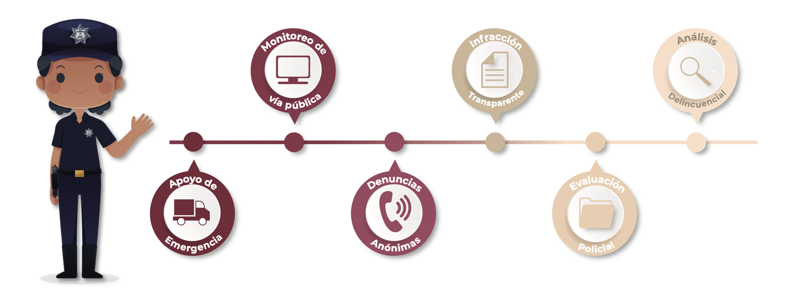
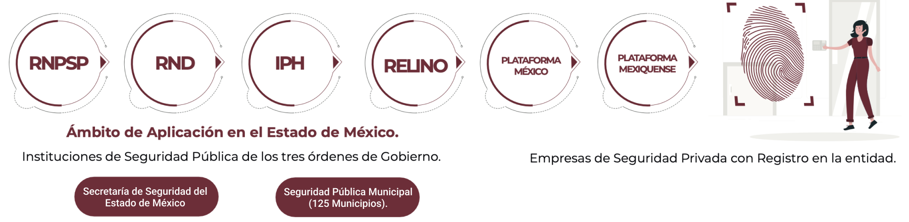

En fecha 13 de julio de 2017, se publicó en el Periódico Oficial Gaceta del Gobierno el acuerdo del Comisionado Estatal de Seguridad Ciudadana del Estado de México, por el que se actualiza la denominación del Centro de Mando y Comunicación por Centro de Control, Comando, Comunicación, Cómputo y Calidad (C5).
Surge como respuesta a la necesidad de tener un Centro Regulador de Información que permitiera ser un enlace entre la ciudadanía y las corporaciones de auxilio.
Se encuentra integrado por la sala de monitoreo más grande de América Latina, donde llega la señal de cámaras de videovigilancia, arcos carreteros con lector de placas para detectar vehículos involucrados en siniestros y el Centro de Atención de Emergencias, que lo constituye como el cerebro de la seguridad del Estado de México.
Entró en funcionamiento el 3 de junio de 2016
Inició operaciones el 27 de septiembre de 2016
Ambos cuentan con tecnología similar a la que emplean países como Estados Unidos, Alemania, Israel o Inglaterra para combatir la delincuencia y actuar con mayor prontitud ante una emergencia, así como reducir y prevenir la comisión de delitos.
Prevenir y coadyuvar en el ámbito de su competencia con los tres niveles de gobierno, en la persecución de hechos ilícitos; para garantizar la paz y tranquilidad de la ciudadanía, mediante el uso de tecnologías de la información en materia de seguridad humana.
Ser identificado y reconocido a nivel Nacional como un organismo estratégico para garantizar el ambiente de seguridad humana, proporcionado un excelente servicio de calidad, a los habitantes del Estado de México.
En el Centro de Control, Comando, Comunicación, Cómputo y Calidad (C5), de la Secretaría de Seguridad del Estado de México, nos comprometemos a realizar nuestros servicios de:
De acuerdo con la Norma Internacional de Gestión de Calidad ISO 9001:2015, para garantizar con esto el cumplimiento normativo pleno y alcanzar eficazmente los resultados planificados, mejorando continuamente el sistema a través de objetivos de calidad, evaluando el desempeño y gestionando los riesgos y las oportunidades.
Altavoces
Sistema de Alertamiento Silencioso Código C5
Video Vigilancia en Transporte Público
Botón de Auxilio en Puntos de Monitoreo Inteligente
Botón de Enlace Ciudadano
Centros de Control, Comando, Comunicación, Cómputo y Calidad
Centros de Mando Municipales
Cámaras
Arcos Carreteros
Drones
Dirigida a Escuelas, Empresas y público en general.
Dirigida a Escuelas, Empresas y público en general.
Dirigido a los Municipios que conforman el Estado de México.
Dirigido a establecimientos comerciales, empresas parques industriales, asociaciones civiles, dependencias gubernamentales, escuelas y hospitales.
Establecer las fases y pautas para la integración al Registro Nacional de Personal de Seguridad Pública, respecto de los datos que permitan iden- tificar plenamente a los servidores públicos que realizan o pretenden reali- zar labores de Seguridad Pública o Privada; así como su historial laboral, sanciones, estímulos y reconocimientos.
